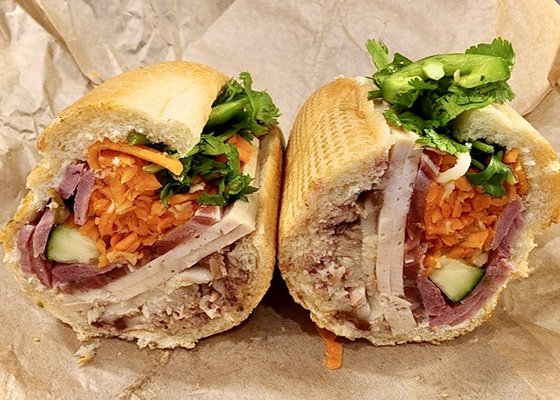

Prawn Banh Mi

Description
Prawn Banh Mi A French-inspired Vietnamese sandwich.
Ingredients
- 1 large carrot, peeled and shredded
- 1 stalk celery, chopped
- 2 scallions (green onions), chopped
- ¼ cup rice vinegar
- ⅓ cup chopped fresh cilantro
- 3 tablespoons low-fat mayonnaise
- 3 tablespoons low-fat plain yogurt
- 1 tablespoon lime juice
- ⅛ teaspoon cayenne pepper
- 3 (12 inch) French baguettes, cut into halves
- 1 pound frozen cooked prawns, thawed and tails removed
- 18 thin slices cucumber, or more to taste
Steps
- Combine carrot, celery, and scallions in a bowl. Pour vinegar over vegetable mixture and toss to coat; set aside to marinate.
- Stir cilantro, mayonnaise, yogurt, lime juice, and cayenne pepper together in a bowl. Spread about 2 teaspoons cilantro sauce onto bottom piece of each baguette.
- Remove vegetables from vinegar using a slotted spoon, discarding vinegar. Spoon vegetables over cilantro sauce layer on baguette pieces.
- Mix prawns in the remaining cilantro sauce and arrange 10 prawns over vegetable layer; top with cucumber slices. Place top piece of baguette over cucumber layer, creating a sandwich.